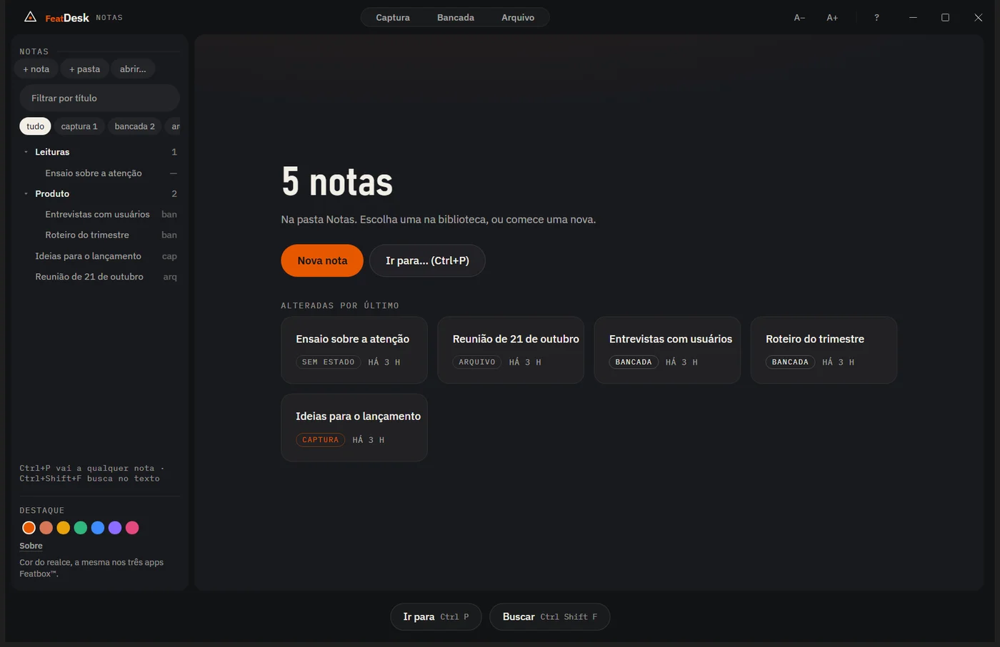
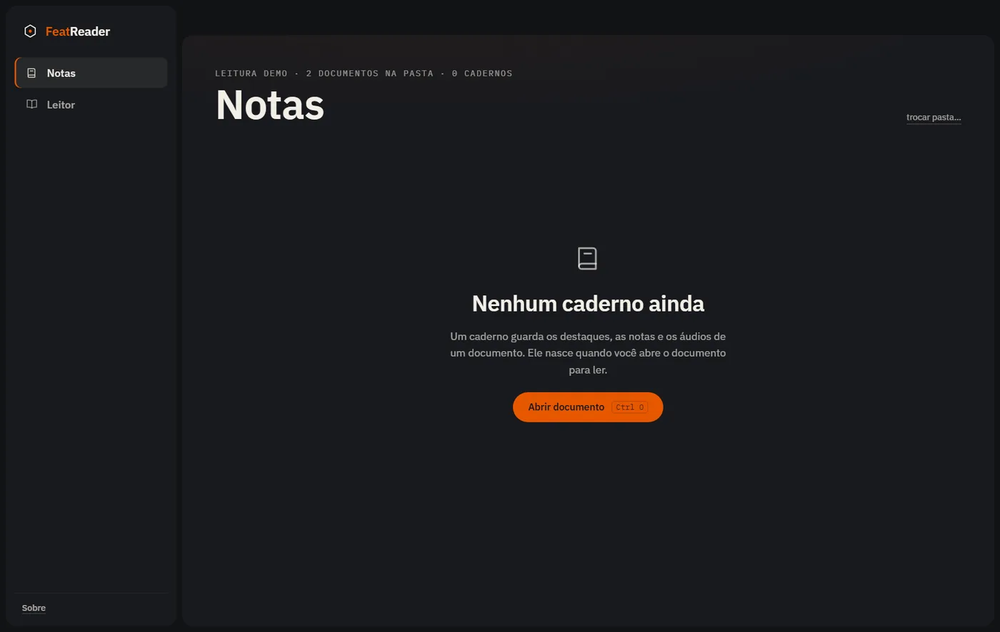
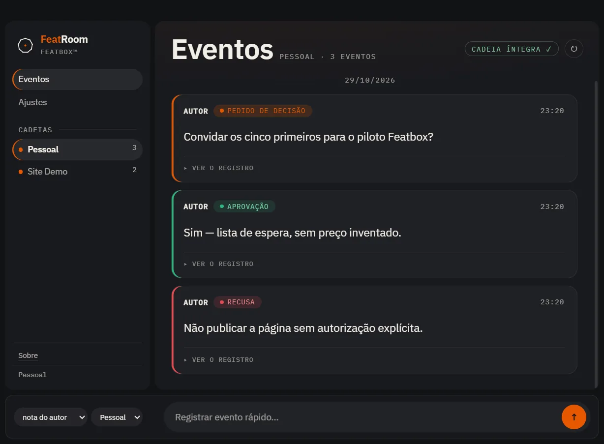
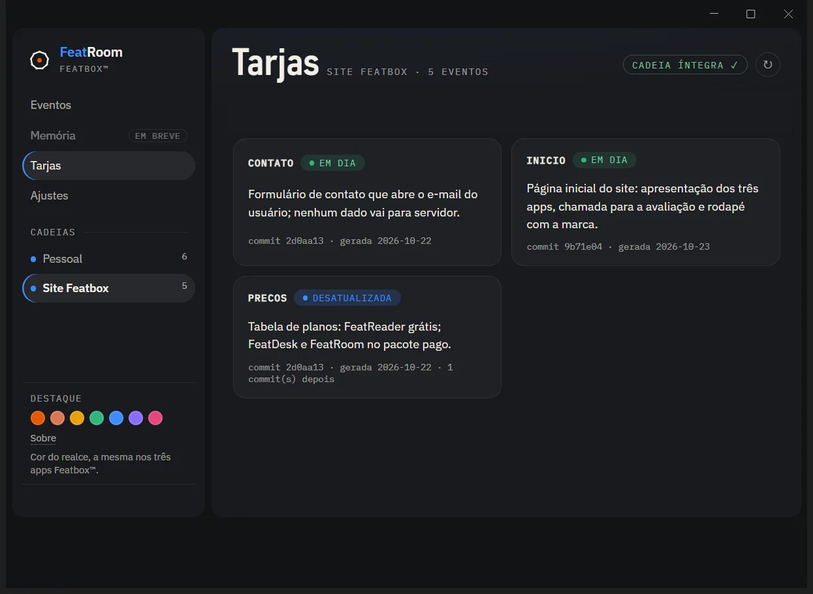

FB/010.5.0


FeatDeskNotas em Markdown numa pasta sua, em três estados: captura, bancada e arquivo. Busca em tudo, e o app não acessa a internet.
Pacote de ferramentas0.5.0 · piloto aberto
Featbox é um pacote de ferramentas para quem toca projetos longos com vários assistentes de IA. Cada IA com a sua função, e a última palavra é sua.
[01] A proposta
IA sem processo é automação de bagunça. O Featbox parte de três princípios e as ferramentas existem para cumpri-los.
Cada assistente faz o que faz melhor: planejar, pesquisar, revisar. O contexto do projeto é o mesmo para todos.
A IA propõe, pesquisa e executa. O que vira regra passa pela aprovação da pessoa e fica registrado com data e fonte.
Cada provedor recebe só o que a sua função pede. O projeto completo fica com você, em arquivos seus.
[02] As ferramentas
Os nomes seguem uma regra simples: Feat + a função. As telas abaixo são da versão 0.5.0 instalada, com dados de demonstração.


FeatDeskNotas em Markdown numa pasta sua, em três estados: captura, bancada e arquivo. Busca em tudo, e o app não acessa a internet.


FeatReaderLê md, txt, pdf e docx. Cada documento ganha um caderno com destaques, notas e áudio, e a leitura em voz é feita no seu computador. Grátis.


FeatRoomCada pedido, aprovação e recusa entra numa cadeia com hash: dá para provar o que foi decidido e quando. Uma cadeia pessoal e uma por projeto.
[03] Como uma decisão anda
Ao lado, uma ilustração do caminho de uma proposta até virar regra.
[04] Como é construído
O Featbox é feito com IA e com uma pessoa aprovando o que importa.
Nada é chamado de pronto sem testes automatizados e sem o registro do porquê de cada decisão.
Arquitetura, decisões e testes ficam escritos em cada projeto.
Esta página e a documentação de apresentação são públicas. O código continua privado.
[05] Na prática
Aqui só entra o que funciona e dá para conferir, ou o que foi medido. O que ainda é hipótese fica de fora.
Nenhuma função usa IA de nuvem nesta versão, e a tela Sobre de cada app declara isso. O FeatDesk bloqueia qualquer conexão de rede. O modelo de linguagem do FeatRoom é opcional, vem desligado e só aceita um modelo rodando no próprio PC.
A IA registra um pedido de decisão; você aprova ou recusa. Cada tipo de evento tem sua cor, e a recusa fica registrada tanto quanto a aprovação.
Cada evento guarda o SHA-256 do anterior, num arquivo que só cresce. O app confere a cadeia e mostra "cadeia íntegra". Se alguém mexer num registro antigo, a conferência acusa.
Cada módulo do projeto tem uma ficha curta do que faz. Quando entra código novo depois dela, o selo muda de "em dia" para "desatualizada", e você sabe em que a IA não deve mais confiar.
Numa semana real de trabalho (17 a 23/10/2026): cerca de 650 milhões de tokens em 33 sessões. Em média, a IA relia 380 mil tokens a cada resposta. O custo maior vem de conversa longa, não de código.
medidor de custos em teste; entra no pacote42 testes no FeatDesk, 48 no FeatReader e 4 da cadeia do FeatRoom, mais um teste de cada app já instalado. Arquivos em formatos abertos: se o Featbox sumir amanhã, suas notas continuam abrindo.

default-src 'none'. A interface não toca o disco: tudo passa por IPC validado.eventos.jsonl, só acrescenta. Cada evento guarda o SHA-256 do anterior; o app recalcula a cadeia e mostra se está íntegra. Tipos: pedido, aprovação, recusa, mensagem, execução.[06] Estado atual
Sem promessa além do que está de pé. Versão 0.5.0 para Windows, instalação por usuário, sem pedir administrador. Quando algo mudar de estado, muda aqui.
[07] Quem constrói
Renato Manduca, de Garopaba, SC. Mais de uma década dentro de operações, do balcão à gestão de equipes inteiras: salão, bar, cozinha, equipe e caixa. Foi daí que veio o critério para o software que constrói hoje: define o que precisa existir, conduz os agentes de IA que constroem e só chama de pronto o que passou nos testes.
[08] Piloto
Quero saber se o Featbox serve para alguém além de mim. O piloto responde isso melhor do que qualquer texto desta página.
Seus dados ficam só no e-mail, para combinar o piloto. Nada é vendido nem repassado.